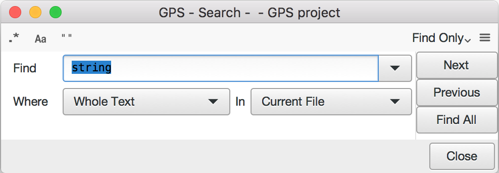

8. Searching and Replacing¶
GPS provides extensive search capabilities in different contexts. For example, you can search in the currently edited source file or in all source files belonging to the project, even those that are not currently open. You can also search in the project view (on the left side of the main GPS window).
All of these search contexts are merged into a single graphical window that
you can open either through the menu or
the shortcut Ctrl-F.
8.1. Searching¶
By default, the search window is floating and appears as a dialog on top of GPS. Put it inside the multiple document interface for easier access by selecting the menu and dropping the search window into a new location (for example, above the Project view). Selecting either option pops up a dialog on the screen similar to the following:
This dialog’s toolbar contains several buttons that enable some specific options:
Regexp
Toggles between strings and regular expressions. Or you can select the arrow to the right of the Search for: field. The grammar used by regular expressions is similar to the Perl and Python regular expressions grammar and is documented in the GNAT run time file
g-regpat.ads. To open it from GPS, use the open from project menu () and typeg-regpat.ads.Whole Word
Force the search engine to ignore substrings. For example, “sensitive” no longer matches “insensitive”.
Case Sensitive Search
By default, patterns are case insensitive (upper-case letters and lower-case letters are considered equivalent). Change this behavior by clicking this check box.
In addition, the dialog’s local menu contains more general options used to control the behavior of the Search view:
Incremental search
Enable the incremental mode. In this mode, a search will be automatically performed whenever the search pattern is modified, starting from the current location to the next occurrence in the current file.
Close on Match
This button only appears if the search window is floating. If pressed, the search window is automatically closed when an occurrence of the search string is found.
Select on Match
Gives the focus to the editor containing the match. If not selected, the focus remains on the search window. If so, press
Enterto search for the next occurrence.
By default, the search view contains three searching related widgets:
- Search
Type the string or pattern to search for.
The combo box provides a number of predefined patterns. The top two are empty patterns that automatically set the appropriate strings or regular expression mode. The other regular expressions are language-specific and match patterns such as Ada type definitions or C++ method declarations.
- Where
Used restrict the search to a set of language constructs. For example, use this to to avoid matching comments when you are only interested in actual code or to only search strings and comments, but not code.
- In
The context in which the search should occur.
GPS automatically selects the most appropriate context when you open the search dialog by looking at the component that currently has the focus. If several contexts are possible for one component (for example, the editor has Current_File, Files from Project, Files..., and Open Files), the last one you used is selected.
Change the context to a different one by clicking on the arrow on the right, which displays the list of all possible contexts, including:
Open Files
Search all files currently open in the source editor.
Files...
Search a specified set of files. An extra Files box is displayed where you specify the files using standard shell (Unix or Windows) regular expressions (such as
*.ad?for all files ending with.adand any trailing character). The directory specifies where the search starts and the Recursive search button whether subdirectories are also searched.Files From Projects
Search all files from the current project, including files from project dependencies.
Files From Current Project
Search all files from the current project, defaulting to the root project if none. The currently selected project might be the one to which the source file belongs (if you are in an editor) or the selected project (if you are in the Project view).
Files From Runtime
Search all specification files from GNAT runtime library
Current File
Search the current source editor.
Normally, GPS sets the default value for In that matches the currently selected window. For example, if you are in an editor and open the search dialog, the context is set to Current File. Optionally, GPS can remember the last context that was set (see the preference ). In that case, if an editor is selected, GPS remembers whether the last time you started a search from an editor you decided to search in (for example) Current File or Files From Project.
Finally, you can create key shortcuts (through the menu, in the Search category) to open the search dialog and set the context to a specific value.
The right part of the dialog is a row of three buttons, used to navigate among the search results.
Press the Find or Previous button to perform an
interactive search, which stops as soon as one occurrence of the pattern is
found. At that point, the Find button is renamed to
Next, which you press (or type the equivalent shortcut
Ctrl-N) to go to the next occurrence.
The Find all button starts a search for all occurrences and puts the results in a view called Locations view, see The Locations View.
8.2. Replacing¶
The combo box present in the toolbar is used to switch the search view’s
mode: switch to Find & Replace to enable replacing
capabilities. You can also use the menu
or the Ctrl-Shift-F shortcut to switch to this mode.
In this mode, an additional field is displayed:
- Replace
Contains the string to replace the occurrences of the pattern. The combo box provides a history of previously used replacement strings. If a regular expression is used for search, special escapes in this field are used as:
\1,\2..\9refer to the corresponding matching subexpressions.\0refers to the complete matched string.\i,\i(start,step)refers to the sequentially increasing number (starting from start and increased by step on each replace).
The Replace and Replace & Find buttons are grayed out if no occurrence of the pattern is found. To enable them, start a search, for example by pressing the Find button. Pressing Replace replaces the current occurrence (grays out the two buttons) and Replace & Find replaces the occurrence and jumps to the next one, if any. If you do not want to replace the current occurrence, jump to the next one by pressing Next.
The Repl all button replaces all occurrences found. By default, a popup is displayed asking for confirmation. You can disable this popup by either checking the box Do not ask this question again or going to the Search panel of the preferences pages and unchecking Confirmation for Replace all.
Like most GPS components, the search window is under control of the multiple document interface and can be integrated into the main GPS window instead of being an external window. To do this, open the menu in the list at the bottom of the menu, and either select or .
If you save the desktop (), GPS automatically reopens the search dialog in its new place when it is next started.
8.3. Searching in current file¶
The dialog we described above is convenient when you want to search in multiple files, or even in files that are not opened in GPS. However, the most frequent context is to search in the current file. GPS provides a number of facilities just for this:
Use the Incremental search option
When this option is enabled, GPS automatically jumps to the next match for the word you are currently typing.
Use the omni-search
At the top-right corner of the GPS window, the search field is able to search in all the sources of your project. But it can also search just in the current source. The recommended approach is once again to define a new key shortcut via , for the action Global Search in context: current file. Whenever you press that shortcut from now on, GPS will move the keyboard focus to the global search box, and when you type some text, a popup window will show all occurrences of that text within the current file.